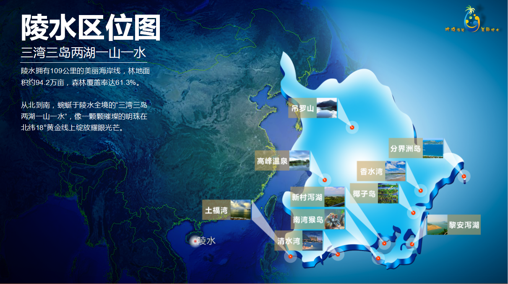
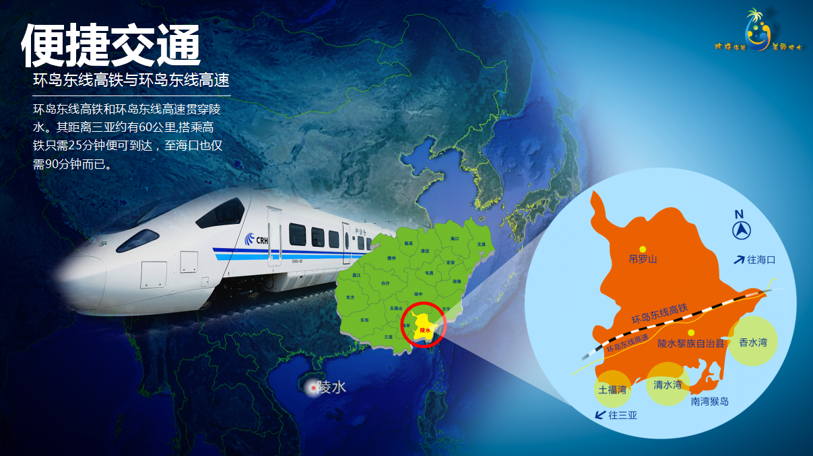
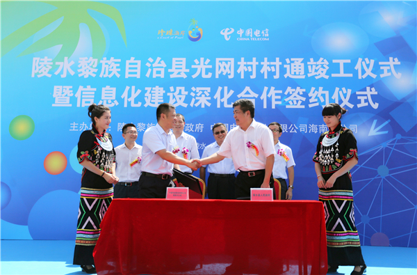
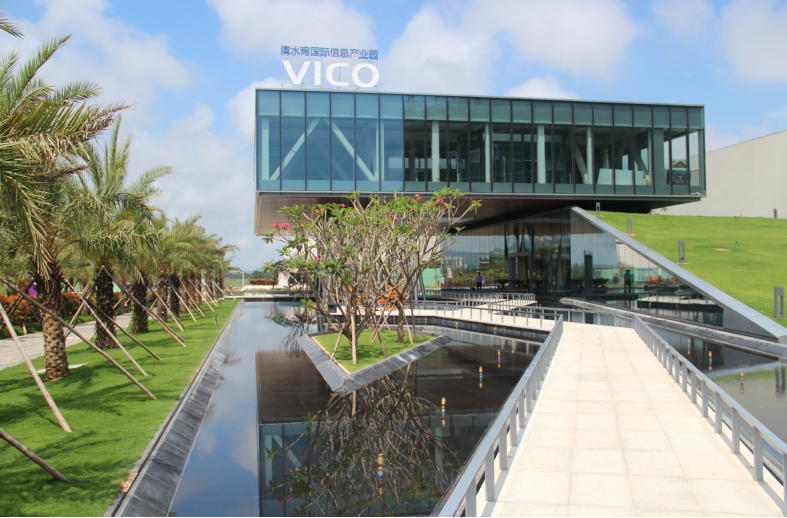

珍珠海岸 美丽陵水
 光纤宽带网络 我县有城区小区171个、行政村116个、自然村580个，光纤网络已全部覆盖，覆盖率100%，陵水既是海南省第一个也是全国第一个全县所有自然村村村通光纤宽带网络的市县。
互联网产业发展布局
清水湾国际信息产业园 园区位于陵水清水湾畔，园区预计总投资200亿元，规划用地209公顷，是海南省“十三五”规划重点发展园区，园区规划发展的四大产业为移动互联、云端物联、数字创意、服务外包

互联网产业发展布局
陵水互联网创业园 为大力发展辖区互联网产业，陵水县委县政府于2016年5月4日投资创建了陵水互联网创业园，园区总面积 5035.54平方米，位于县城中心位置，地理位置十分便利，已成为陵水互联网优秀项目孵化器和电子商务企业发展壮大的助推器。
互联网产业发展布局
京陵数据谷 在海南国际旅游岛先行试验区规划建设以生态化、体验化和智能化为特色的大数据创新产业园，承载南海丝路大数据中心及南海大数据应用研究院、大数据学院等项目，推动国家发展改革委互联网大数据分析中心海南分中心建设，促进国家级行业大数据资源落地海南。
互联网产业发展重点
七大发展重点：互联网+农业
陵水现代农业示范基地 陵水现代农业示范基地项目总规划面积5231亩，为海南省重点项目，预算总投资17.2亿元。基地由“五区一带”组成，即科研培训展示区、生产试验区、生产示范区、物流加工交易区、国际农业论坛区及休闲农业观光带。该基地于2015年被评为省级农业示范基，同年12月获批国家级农业科技园区。
互联网产业发展重点
七大发展重点：互联网+政务
腾讯智慧陵水项目 2015年12月25日的智慧陵水项目建设和运营合作框架协议签约，成为“智慧海南公共服务平台”在我省落地的第一个市县示范项目，主要建设微信政务办公平台、精准扶贫帮扶平台等六大平台。
互联网发展优惠政策
金十条主要分为四大部分内容
1. 培育、引进行业骨干企业，给予不超过500万元的成长奖励，对企业贡献的税收予以奖励，扶持并奖励电商企业发展； 2. 加强人才引进，给予社会保险费补贴和住房补贴，以及贡献个税予以奖励等； 3. 加大金融扶持，对小额担保贷款给予贴息支持，开发“政保贷”并给予信用贷款； 4. 强化创业扶持，对进驻陵水互联网创新产业园的孵化团队给予全免费用的待遇，对孵化区机构给予创业 辅导奖励，对在海南举办的服务陵水的互联网创新创业活动，给予补贴。
互联网发展优惠政策
金十条主要分为四大部分内容
1. 培育、引进行业骨干企业，给予不超过500万元的成长奖励，对企业贡献的税收予以奖励，扶持并奖励电商企业发展； 2. 加强人才引进，给予社会保险费补贴和住房补贴，以及贡献个税予以奖励等； 3. 加大金融扶持，对小额担保贷款给予贴息支持，开发“政保贷”并给予信用贷款； 4. 强化创业扶持，对进驻陵水互联网创新产业园的孵化团队给予全免费用的待遇，对孵化区机构给予创业 辅导奖励，对在海南举办的服务陵水的互联网创新创业活动，给予补贴。
魅力陵水 邀您共享
永远欢迎您